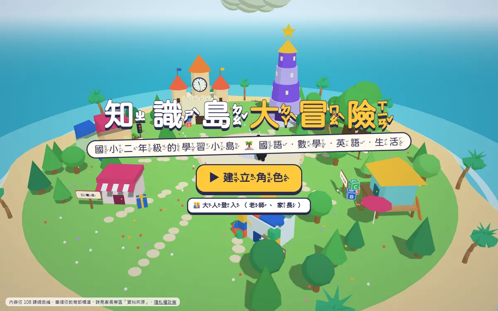
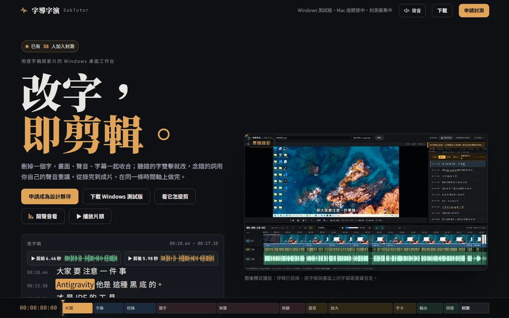
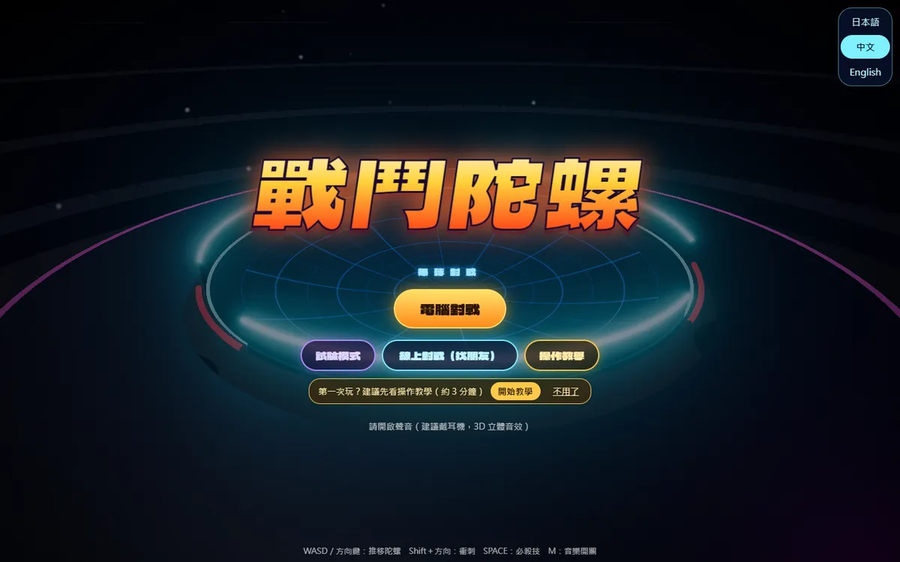

今天的講師
凱文大叔
上市公司 MIS 主管 · 20 年以上 Java 開發 · 近年專注 AI 應用
長年在企業裡開發系統，近幾年把力氣放在讓 AI 真正進到工作流程：語言模型整合、RAG 知識庫與智能化工作流程。
著作《使用 Spring AI 打造企業 RAG 知識庫》
近期作品
今天要教的 Vibe Coding，我自己每天都在用。這四個都是最近和 AI 一起做出來、已經上線的作品，點卡片就能打開。
-

3D 學習遊戲 知識島大冒險 給國小二年級的遊戲化學習網站：在 3D 小島上走進建築，玩國語、數學、英語、生活各科小遊戲，題目依 108 課綱編寫。 kevintsai1202.github.io/learning-game ↗ -

影片剪輯工具 字導字演 SubTutor 用逐字稿剪影片的 Windows 桌面工作台：刪掉一個字，畫面、聲音、字幕一起剪；AI 校稿、自動裁掉停頓，念錯的詞用自己的聲音重講。 subtutor.zeabur.app ↗ -

網頁對戰遊戲 戰鬥陀螺 Battle Tops 瀏覽器上的陀螺對戰：電腦對戰、線上找朋友對戰、試驗模式比較零件搭配；拉條發射、必殺技，中文、日文、英文介面。 kevintsai1202.github.io/battle-tops ↗ - 法律 AI · WebMCP Law Graph 法律關係圖 與你的 Agent 一起建構台灣法律關係圖：描述糾紛，找法條與判決、逐要件涵攝、產出書狀與關係圖；也能逐條審查合約風險。 law-graph-webmcp.zeabur.app ↗
生成式AI程式開發與Vibe Coding實務：用 ChatGPT 桌面版指揮 AI，把教育訓練報名簽到做成一個能用的小系統。